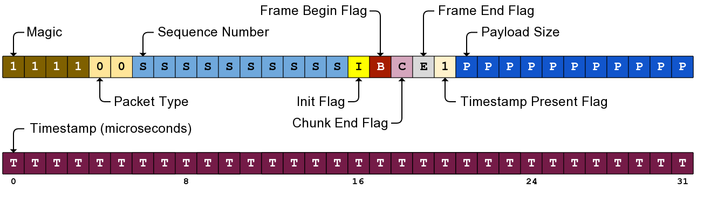
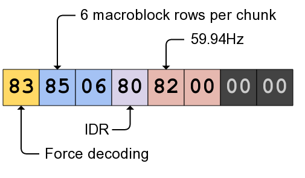

| Console Port | Pad Port | Direction |
|---|---|---|
| 50020 | 50120 | Console ↔ Pad |
The video streaming protocol, also known as vstrm, is used to stream
compressed game video data from the Wii U to a GamePad, or to stream camera
data from a GamePad to the Wii U. It is using H.264 with a custom wrapper
around the VCL instead of NAL.
Each packet has an 8 byte header (4 is also possible but never seen), followed by an 8 byte extended header, followed by the compressed video data.
struct VstrmHeader {
u32 magic : 4;
u32 packet_type : 2;
u32 seq_id : 10;
u32 init : 1;
u32 frame_begin : 1;
u32 chunk_end : 1;
u32 frame_end : 1;
u32 has_timestamp : 1;
u32 payload_size : 11;
// If has_timestamp is set (almost always)
u32 timestamp : 32;
};

This header is then followed by an 8 byte extended header.
The extended header is an 8 byte area after the vstrm header where options
can be set. Each option is represented by a byte, and options are read linearly
from the extended header until either 8 bytes were read or a 0x00 byte was
read (signaling the end of options). Here are the known options:
| Option Byte | Option Name | Arg | Description |
|---|---|---|---|
| 0x00 | End | N | End of options. |
| 0x80 | IDR | N | Indicated that the frame is an IDR. |
| 0x81 | Unimplemented | Y | Takes one byte of argument but does nothing. |
| 0x82 | Frame Rate | Y | 0 = 59.94Hz, 1 = 50Hz, 2 = 29.97Hz, 3 = 25Hz. |
| 0x83 | Force Decoding | N | Forces decoding even if buffer is too small. |
| 0x84 | Unset Force Flag | N | Unsets the force decoding flag. |
| 0x85 | NumMbRowsInChunk | Y | Usually 6 (6 * 16px * 5 chunks = 480px). |

A single H.264 frame is obviously not sent in one vstrm packet: the network
MTU is around 1800 bytes, making it impossible to transfer most frames. To
separate a frame into several packets, the vstrm protocol does the
following:
chunk_end flag set.On top of that, the first packet of the first chunk of a frame has the
frame_begin flag set, and the last packet of the last chunk of a frame has
the frame_end flag set.
TODO: see src/video-streamer.cpp.